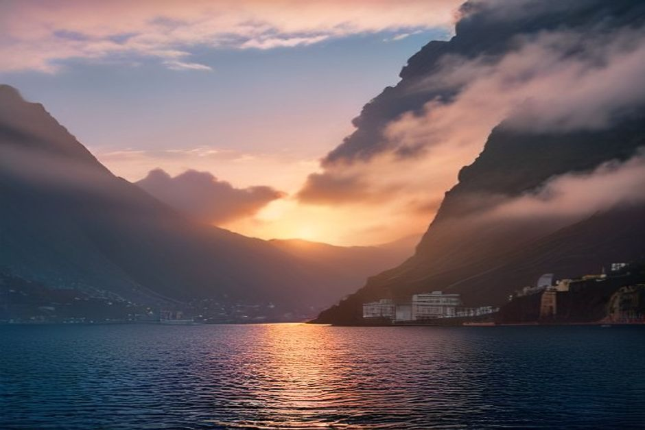

Wer „Madeira Uhrzeit“ oder „Uhrzeit Funchal“ eintippt, plant meist gerade etwas Konkretes: einen Flug, einen Treffpunkt, eine Bootstour. Hier klären wir beides. Zuerst die Zeitzone, dann die eigentliche Frage: Um welche Uhrzeit sollten Sie ab Funchal ablegen?
Welche Uhrzeit gilt auf Madeira?
Auf Madeira gilt dieselbe Zeit wie in Portugal auf dem Festland und in Lissabon, die Westeuropäische Zeit. Gegenüber Deutschland, Österreich und der Schweiz ist es auf der Insel immer eine Stunde früher. Wenn es in Wien oder Zürich 12:00 Uhr ist, zeigt die Uhr in Funchal 11:00 Uhr.
Das gilt das ganze Jahr, denn Madeira stellt die Uhren zur gleichen Zeit um wie wir, am letzten Sonntag im März und am letzten Sonntag im Oktober. Der Unterschied von einer Stunde bleibt also im Sommer wie im Winter gleich. Stellen Sie Ihre Armbanduhr trotzdem früh um, vor allem am Abreisetag: Wer um 10:00 Uhr Inselzeit am Steg stehen soll, ist nach deutscher Uhr erst um 11:00 Uhr dran.
Alle Zeiten in diesem Artikel und bei Chifbay sind Ortszeit in Funchal.
Drei Abfahrtszeiten ab der Marina do Funchal
Treffpunkt ist immer die Marina do Funchal, Steg C. Bei Chifbay haben Sie das ganze Boot für Ihre Gruppe, mit bis zu 5 Gästen und zwei lizenzierten Skippern aus Madeira. Zur Wahl stehen drei Zeitfenster:
- 10:00 Uhr: Day Trip am Vormittag
- 14:00 Uhr: Day Trip am Nachmittag
- 1 Std. 15 Min. vor Sonnenuntergang: Sunset Trip, das ganze Jahr
Alle drei fahren an derselben Südküste entlang: Câmara de Lobos, Cabo Girão und weiter nach Westen. Unterschiedlich sind Licht, Wind, Wassertemperatur und die Frage, ob Sie baden.

10:00 Uhr: das ruhigste Wasser
An der Südküste Madeiras erwärmt sich das Land im Lauf des Tages und zieht eine Seebrise an. Wind und leichter Wellengang nehmen deshalb meist ab dem frühen Nachmittag zu. Wer um 10:00 Uhr ablegt, trifft in der Regel auf das glatteste Wasser des Tages. Das bedeutet leichteres Schwimmen, ruhigere Drohnenaufnahmen und eine sanftere Fahrt am Cabo Girão vorbei. Wirklich rau wird es selten, aber wer empfindlich ist, fährt am Vormittag besser.
Dazu kommt das Licht: Die Sonne steht noch nicht im härtesten Mittagswinkel, die Sicht im Wasser ist meist klar, und die Küste lässt sich gut fotografieren. Der Preis dafür ist ein Meer, das noch ein wenig kühler sein kann.
14:00 Uhr: wärmeres Meer zum Baden
Am Nachmittag hat die Sonne das Wasser rund um Fajã dos Padres und Ribeira Brava einige Stunden länger beschienen. Wer kälteempfindlich ist und das Baden in den Mittelpunkt stellt, springt hier meist am angenehmsten hinein. Dafür kann es etwas windiger sein, und das Licht ist in der ersten Stunde etwas härter. Beides legt sich im Lauf des Nachmittags.
Auch für die längere Variante bis Ponta do Sol ist dieses Fenster eine gute Wahl: Das Licht wird gegen Ende der Fahrt wieder weicher, wenn das Boot den westlichsten Abschnitt erreicht.
Sonnenuntergang: Abendlicht statt Badestopp
Der Sunset Trip legt 1 Std. 15 Min. vor Sonnenuntergang ab, und zwar an jedem Tag des Jahres. Die Uhrzeit verschiebt sich also mit den Jahreszeiten: Im Sommer fahren Sie später am Abend los, im Winter früher. Die genaue Abfahrtszeit nennen wir Ihnen bei der Buchung.
Gebadet wird bei dieser Tour nicht. Die Wassertemperatur bleibt über den Tag ziemlich gleich, aber die Luft kühlt schnell ab, sobald die Sonne tief steht. Dann aus dem Meer in die kühle Abendluft zu steigen, ist eher unangenehm als erfrischend. Dafür fahren Sie an der Küste entlang, mit Essen und Getränken an Bord und, wenn das Wetter es erlaubt, mit Drohnenaufnahmen. Die Basaltklippen am Cabo Girão können im Abendlicht tief golden wirken. Versprechen lässt sich das nicht, es hängt vom Himmel an dem Abend ab, aber es ist der Grund, warum viele diese Zeit wählen.
Welche Uhrzeit passt zu wem?
- Sie wollen ruhiges Wasser und klare Fotos: 10:00 Uhr.
- Sie wollen vor allem baden: 14:00 Uhr, besonders im Frühling und Herbst.
- Sie wollen Abendstimmung statt Schwimmstopp: Sunset Trip.
- Sie reisen mit Kindern oder Gästen, die schnell frieren: eher 14:00 Uhr oder der Sunset Trip, mit einer Jacke im Gepäck.
Dauer und Preis: was Sie pro Uhrzeit buchen können
Alle Preise gelten für das ganze Boot, nicht pro Person. Das ist bei bis zu 5 Gästen ein wichtiger Unterschied beim Vergleichen.
Day Trip (10:00 oder 14:00 Uhr):
- 2 Std. 30 Min. bis Ribeira Brava für 500 EUR
- 3 Std. weiter bis Ponta do Sol für 600 EUR
Beide Varianten führen an Câmara de Lobos und am Cabo Girão vorbei, mit Badestopp und Paddle Boards an der Fajã dos Padres. Die zusätzlichen 30 Minuten der 600-EUR-Tour bedeuten vor allem mehr Küste im Westen. Wenn Ihnen Baden und Klippen genügen, deckt die kürzere Tour das Wesentliche ab. Mehr dazu finden Sie auf der Seite zum Day Trip.
Sunset Trip:
- 2 Std. bis Cabo Girão für 400 EUR
- 2 Std. 30 Min. bis Ribeira Brava für 500 EUR
Den Sonnenuntergang erleben Sie bei beiden. Die zusätzlichen 30 Minuten bringen mehr Küste, nicht mehr Sonnenuntergang. Alle Details zur Abendfahrt stehen auf der Seite zum Sunset Trip.
An Bord sind bei jeder Tour Essen und Getränke inklusive, außerdem ein Insta360-Video in 360°, Drohnenaufnahmen (wenn das Wetter es zulässt) und Fotos mit einer echten Kamera.
Ändert die Jahreszeit die Wahl?
Vor allem beim Baden. Von Juni bis September ist das Meer am wärmsten, und jedes Zeitfenster eignet sich zum Schwimmen. Im Frühling und Herbst ist das Wasser kühler. Dann lohnt sich meist das Nachmittagsfenster um 14:00 Uhr, weil sich das Meer einige Stunden in der Sonne erwärmen konnte. Wind und Licht bleiben übers Jahr ähnlich, die Regel „morgens ruhiger, nachmittags wärmer“ gilt deshalb in jeder Jahreszeit.
Buchen, ändern, absagen
Bis 24 Stunden vor der Abfahrt können Sie kostenlos stornieren. Das hilft, wenn Sie die Tour früh planen und erst kurz vorher auf die Wettervorhersage schauen. Treffpunkt ist die Marina do Funchal, Steg C, bitte planen Sie ein paar Minuten Puffer ein und denken Sie an die Stunde Zeitunterschied. Weitere Hinweise zu Anreise, Gepäck und Ablauf finden Sie unter Praktische Infos.
Wenn Sie unsicher sind, welche Uhrzeit zu Ihrer Gruppe passt, hilft ein Blick auf alle Erlebnisse. Und wer die Tour erst einmal mit anderen Möglichkeiten vergleichen möchte, findet einen Überblick unter Bootstouren auf Madeira. Eine private Bootstour beginnt bei uns genau mit dieser Frage: Wann möchten Sie los?